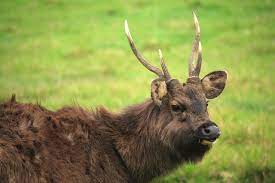
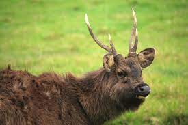

| Park Name | Animal Name | Special Features | Living Preferences | Abundance of the species in Sri Lanka |
|---|---|---|---|---|
| Udawalawe National Park | Mugger Crocodiles | mugger crocodile’s top and bottom set of teeth tend to overhang when it closes its mouth |
mugger crocodiles prefer shallow bodies of water, with the water no more than 5 meters deep and it avoids fast flowing rivers |
2,400 to 3,500 |
| Minneriya National Park | Elephant | Minneriya National Park does not fence or chain their elephants. They are free to roam |
Grasslands of the Minneriya reservoir | 7000 |
| Sinharaja Forest Reserve | Purple-faced langur | The limbs, hands, and feet are also long and slender. | lush high canopies of a variety of forests | 4 subspecies |
| Horton Plains National Park | Sambar Deer | largest antlers both in size and in body proportions. | Sri Lankan sambar live in lowland dry forests and mountain forests. | 1200 |